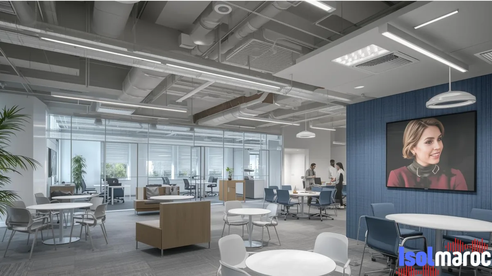
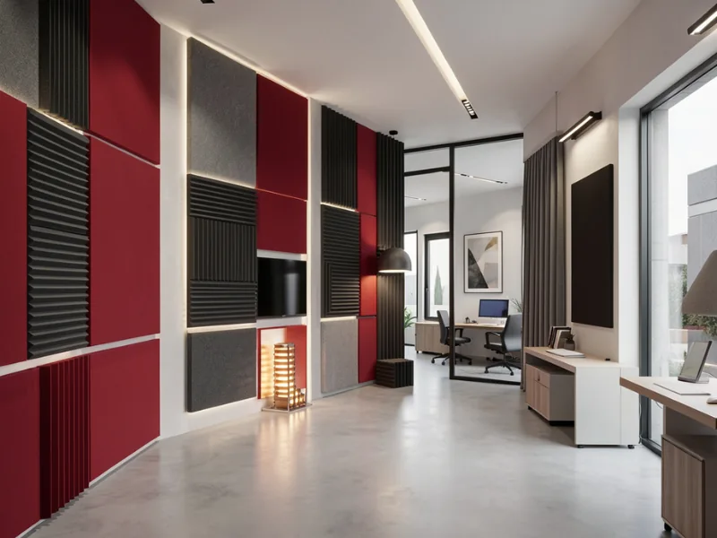
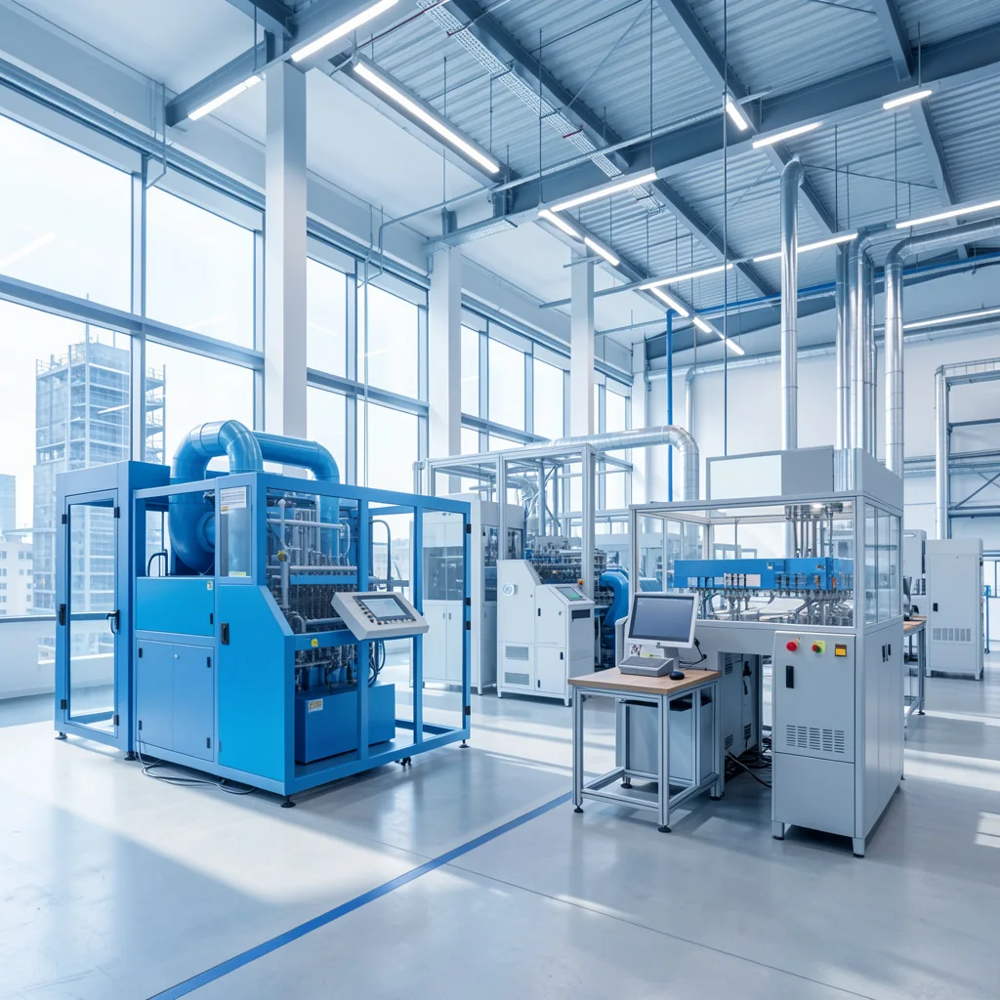
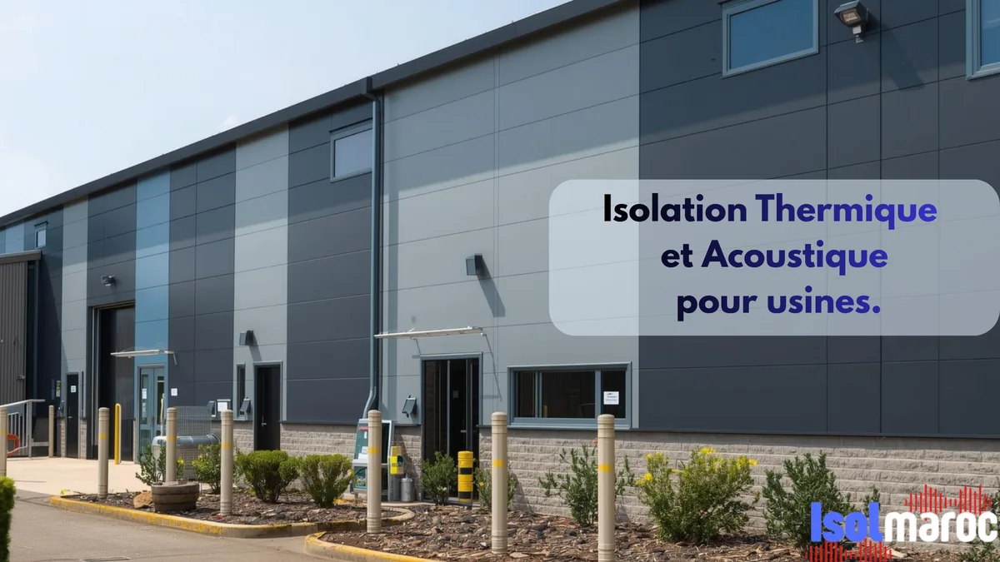

Analyses techniques, conseils et ressources pour mieux comprendre
l’isolation acoustique et thermique.
4 ressources

À la une
L'importance de l'isolation phonique dans les espaces de travail
modernes
Le bruit est l'une des principales sources de distraction en
entreprise. Découvrez comment une bonne isolation acoustique
améliore la productivité et le bien-être des collaborateurs au
Maroc.

Isolation vs Correction Acoustique : Quelle différence ?
Comprendre la différence entre isolation et correction est crucial
pour la réussite de vos projets acoustiques.

Structurer l'isolation vers une croissance durable
Comment la laine de roche haute performance réduit vos coûts
opérationnels et votre empreinte carbone.

Transport et dédouanement : facteur clé de performance
Le transport international et le dédouanement sont des étapes clés
de l'importation de matériaux d'isolation.